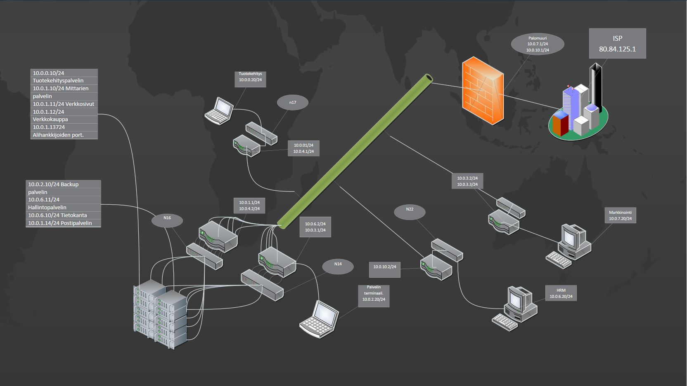

Tietoverkot
Turvallisen tietoverkon rakentaminen
Kokonaisvaltainen yrityksen IT-turvallisuus koostuu uhkien arvioinnista ja hallinnasta. Mitä enemmän yrityksen toimiala nojaa turvallisuuden ja luottamuksellisuuden säilyttämiseen, sitä enemmän tähän riskienhallintaan kannattaa panostaa.
Yrityksessä kannattaa noudattaa tietoturvakäytäntöjä, joissa on ohjeistettu riskienhallintaa käytännössä. Järjestelmät suojataan erilaisilla välineillä, kuten palomuureilla, antivirusohjelmilla ja salasanoilla. Alla on esimerkkikuva Primen rakentamasta pk-yrityksen tietoverkosta, jossa palomuuri on asetettu ulkoverkon ja yrityksen sisäisen liikenteen väliin. Järjestelmiä tulee valvoa jatkuvasti, jotta äkilliset muutokset huomataan välittömästi.
Tietoverkon suunnittelussa kiinnitetään huomiota myös liikenteen rajoittamiseen. Jokaisen yrityksen työntekijän ei tarvitse päästä koko yrityksen verkkoon, vaan yksiköillä voi olla omat palvelimensa. Verkkosuunnitelma-esimerkissämme esimerkiksi henkilöstö- ja myyntiosastoilla on erilliset palvelimet. Työntekijät voivat silti toki olla yhteydessä toisiinsa pikaviestein tai sähköpostilla.
Tietoverkon kestävyyttä hyökkäyksiä vastaan pystyy testaamaan käyttämällä joko omia automaattisia analysointivälineitä tai ulkopuolisia konsultteja. Jos haluat meidät testailemaan verkkosi kestävyyttä hyökkäyksiä vastaan, soita meille. Esitämme myös kehitysehdotuksia, miten yrityksen järjestelmää kannattaa kehittää vaatimuksien ja muuttuvien uhkien mukaan.
{kind=link}

(Lue lisää aiheesta Ciscon sivuilta: http://www.cisco.com/web/FI/assets/docs/esite_security.pdf)